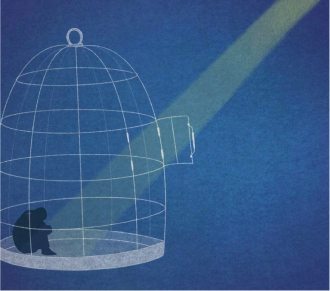
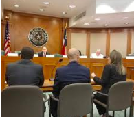

LSJA is a nonprofit legal organization that improves the lives of youth and emerging adults in the justice system.
VISION STATEMENT
We envision a justice system that uses developmentally-appropriate responses to behavior and treats youth and emerging adults with equity and dignity to promote resilience, conserve costs, and increase public safety.
OUR WORK
Juvenile Sentencing Project
Survivors' Project

Transformative Justice

Through targeted outreach, public awareness campaigns, and other organizing activities, LSJA will engage youth, emerging adults, and their families to promote the development of positive outcomes among Texas youth and emerging adults.
In Texas, kids as young as 14 years old can be prosecuted as adults, meaning that they face time in adult jails and prisons.
Justice-involved young adults, ages 17-24 require a community-based, multi-disciplinary intervention to address the factors that contributed to their involvement with the criminal justice system.
LATEST NEWS
RESILIENCE FUND RECIPIENT
LSJA is proud to announce we've been selected for a grant from the Resilience Fund at Texas Women's Foundation (TXWF)
To learn more about Texas Women's Foundation click here.
INVITATION TO THE ASPEN INSTITUTE
LSJA's Deputy Director, Yulise Waters joined the Stand Together Foundation in collaboration with the Aspen Institute to attend their very 1st seminar titled, The American Experiment: Principles in Action, to explore deeper how our shared principles have the potential to change the way our country thinks about, talks about, and tackles poverty.